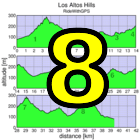

|  |  |
 |
| pl | # | name | team | cat | time | mph | fph | %median |
|---|---|---|---|---|---|---|---|---|
| 1 | 901 | Nina Komlik | San Jose Bike Club | Casual Rider | 59:23.65 | 0.00 | 0 | 69.54 |
| pl | # | name | team | cat | time | mph | fph | %median |
|---|---|---|---|---|---|---|---|---|
| 1 | 63 | Christopher Evans | Easy Riders | 1 | 23:47.16 | 0.00 | 0 | 143.96 |
| 2 | 144 | Daryl Spano | San Jose Bike Club | 50+ | 25:43.85 | 0.00 | 0 | 133.08 |
| 3 | 122 | Alex Poloziouk | Kovarus | 40+ | 25:47.59 | 0.00 | 0 | 132.76 |
| 4 | 136 | Brian Schuster | Easy Riders | 2 | 28:10.24 | 0.00 | 0 | 121.55 |
| 5 | 148 | Andy Sutterfield | San Jose State University | 25+ | 29:38.63 | 0.00 | 0 | 115.51 |
| 6 | 235 | Frank Paysen | Diablo | 55+ | 31:12.93 | 0.00 | 0 | 109.70 |
| 7 | 89 | Scott Krahn | LGBRC | 35+ | 31:39.77 | 0.00 | 0 | 108.15 |
| 8 | 126 | James Rainbow | Pen Velo/Pomodoro | 40+ | 32:14.00 | 0.00 | 0 | 106.23 |
| 9 | 61 | Christoph Erben | LGBRC | Happy Thanksgiving | 34:14.51 | 0.00 | 0 | 100.00 |
| 10 | 131 | Robert Sare | Day sleepers | 25+ | 35:28.55 | 0.00 | 0 | 96.52 |
| 11 | 114 | Dan Pankratz | LGBRC | 40+ | 35:54.11 | 0.00 | 0 | 95.38 |
| 12 | 142 | Kevin Smith | LGBRC | 55+ | 36:58.84 | 0.00 | 0 | 92.59 |
| 13 | 22 | Gabriel Beddingfield | Nest | 40+ | 39:49.86 | 0.00 | 0 | 85.97 |
| 14 | 88 | Alexander Komlik | San Jose Bike Club | Photo-Bag Handicap | 40:15.82 | 0.00 | 0 | 85.04 |
| 15 | 401 | Bernard Bell | — | 55+ | 40:28.46 | 0.00 | 0 | 84.60 |
| 16 | 900 | Mark Hlady | 43:40.46 | 0.00 | 0 | 78.40 |
| pl | # | name | team | cat | time | mph | fph | %median |
|---|---|---|---|---|---|---|---|---|
| 1 | 242 | Sarah Schroer | Sr's & Mr's of No Mercy | 40+ | 34:06.57 | 0.00 | 0 | 110.74 |
| 97 | Paul McKenzie | Sr's & Mr's of No Mercy | 60+ |
| pl | # | name | team | cat | time | mph | fph | %median |
|---|---|---|---|---|---|---|---|---|
| 1 | 6 | Bill Bushnell | Low-Key | 25:30.69 | 0.00 | 0 | 77.99 |
| pl | # | name | team | cat | time | mph | fph | %median |
|---|---|---|---|---|---|---|---|---|
| 1 | 901 | Nina Komlik | San Jose Bike Club | Casual Rider | 7:18.12 | 0.00 | 0 | 72.83 |
| pl | # | name | team | cat | time | mph | fph | %median |
|---|---|---|---|---|---|---|---|---|
| 1 | 63 | Christopher Evans | Easy Riders | 1 | 3:39.19 | 0.00 | 0 | 120.68 |
| 2 | 144 | Daryl Spano | San Jose Bike Club | 50+ | 3:44.21 | 0.00 | 0 | 117.97 |
| 3 | 148 | Andy Sutterfield | San Jose State University | 25+ | 3:54.37 | 0.00 | 0 | 112.86 |
| 4 | 136 | Brian Schuster | Easy Riders | 2 | 3:55.65 | 0.00 | 0 | 112.25 |
| 5 | 126 | James Rainbow | Pen Velo/Pomodoro | 40+ | 3:58.28 | 0.00 | 0 | 111.01 |
| 6 | 122 | Alex Poloziouk | Kovarus | 40+ | 3:58.56 | 0.00 | 0 | 110.88 |
| 7 | 142 | Kevin Smith | LGBRC | 55+ | 4:04.18 | 0.00 | 0 | 108.33 |
| 8 | 22 | Gabriel Beddingfield | Nest | 40+ | 4:23.49 | 0.00 | 0 | 100.39 |
| 9 | 89 | Scott Krahn | LGBRC | 35+ | 4:24.51 | 0.00 | 0 | 100.00 |
| 10 | 61 | Christoph Erben | LGBRC | Happy Thanksgiving | 4:28.00 | 0.00 | 0 | 98.70 |
| 11 | 235 | Frank Paysen | Diablo | 55+ | 4:28.17 | 0.00 | 0 | 98.64 |
| 12 | 88 | Alexander Komlik | San Jose Bike Club | Photo-Bag Handicap | 4:33.68 | 0.00 | 0 | 96.65 |
| 13 | 114 | Dan Pankratz | LGBRC | 40+ | 4:45.02 | 0.00 | 0 | 92.80 |
| 14 | 131 | Robert Sare | Day sleepers | 25+ | 4:46.95 | 0.00 | 0 | 92.18 |
| 15 | 401 | Bernard Bell | — | 55+ | 4:55.47 | 0.00 | 0 | 89.53 |
| 16 | 900 | Mark Hlady | 5:29.42 | 0.00 | 0 | 80.30 |
| pl | # | name | team | cat | time | mph | fph | %median |
|---|---|---|---|---|---|---|---|---|
| 1 | 242 | Sarah Schroer | Sr's & Mr's of No Mercy | 40+ | 3:41.09 | 0.00 | 0 | 131.98 |
| 97 | Paul McKenzie | Sr's & Mr's of No Mercy | 60+ |
| pl | # | name | team | cat | time | mph | fph | %median |
|---|---|---|---|---|---|---|---|---|
| 1 | 6 | Bill Bushnell | Low-Key | 3:54.56 | 0.00 | 0 | 65.52 |
| pl | # | name | team | cat | time | mph | fph | %median |
|---|---|---|---|---|---|---|---|---|
| 1 | 901 | Nina Komlik | San Jose Bike Club | Casual Rider | 32:02.81 | 0.00 | 0 | 72.53 |
| pl | # | name | team | cat | time | mph | fph | %median |
|---|---|---|---|---|---|---|---|---|
| 1 | 63 | Christopher Evans | Easy Riders | 1 | 12:39.75 | 0.00 | 0 | 152.17 |
| 2 | 144 | Daryl Spano | San Jose Bike Club | 50+ | 13:45.40 | 0.00 | 0 | 140.07 |
| 3 | 136 | Brian Schuster | Easy Riders | 2 | 13:52.73 | 0.00 | 0 | 138.84 |
| 4 | 122 | Alex Poloziouk | Kovarus | 40+ | 14:04.60 | 0.00 | 0 | 136.88 |
| 5 | 126 | James Rainbow | Pen Velo/Pomodoro | 40+ | 14:35.23 | 0.00 | 0 | 132.09 |
| 6 | 148 | Andy Sutterfield | San Jose State University | 25+ | 16:02.30 | 0.00 | 0 | 120.14 |
| 7 | 235 | Frank Paysen | Diablo | 55+ | 16:54.37 | 0.00 | 0 | 113.97 |
| 8 | 61 | Christoph Erben | LGBRC | Happy Thanksgiving | 17:46.96 | 0.00 | 0 | 108.36 |
| 9 | 88 | Alexander Komlik | San Jose Bike Club | Photo-Bag Handicap | 19:16.13 | 0.00 | 0 | 100.00 |
| 10 | 131 | Robert Sare | Day sleepers | 25+ | 19:28.30 | 0.00 | 0 | 98.96 |
| 11 | 142 | Kevin Smith | LGBRC | 55+ | 20:20.54 | 0.00 | 0 | 94.72 |
| 12 | 89 | Scott Krahn | LGBRC | 35+ | 20:40.78 | 0.00 | 0 | 93.18 |
| 13 | 22 | Gabriel Beddingfield | Nest | 40+ | 21:02.77 | 0.00 | 0 | 91.55 |
| 14 | 401 | Bernard Bell | — | 55+ | 22:18.59 | 0.00 | 0 | 86.37 |
| 15 | 900 | Mark Hlady | 23:49.17 | 0.00 | 0 | 80.90 | ||
| 16 | 114 | Dan Pankratz | LGBRC | 40+ | 29:34.93 | 0.00 | 0 | 65.14 |
| pl | # | name | team | cat | time | mph | fph | %median |
|---|---|---|---|---|---|---|---|---|
| 1 | 242 | Sarah Schroer | Sr's & Mr's of No Mercy | 40+ | 18:54.14 | 0.00 | 0 | 112.45 |
| 97 | Paul McKenzie | Sr's & Mr's of No Mercy | 60+ |
| pl | # | name | team | cat | time | mph | fph | %median |
|---|---|---|---|---|---|---|---|---|
| 1 | 6 | Bill Bushnell | Low-Key | 10:09.48 | 0.00 | 0 | 110.22 |
| pl | # | name | team | cat | time | mph | fph | %median |
|---|---|---|---|---|---|---|---|---|
| 1 | 901 | Nina Komlik | San Jose Bike Club | Casual Rider | 4:01.41 | 0.00 | 0 | 72.57 |
| pl | # | name | team | cat | time | mph | fph | %median |
|---|---|---|---|---|---|---|---|---|
| 1 | 144 | Daryl Spano | San Jose Bike Club | 50+ | 1:57.97 | 0.00 | 0 | 123.10 |
| 2 | 63 | Christopher Evans | Easy Riders | 1 | 2:02.12 | 0.00 | 0 | 118.91 |
| 3 | 126 | James Rainbow | Pen Velo/Pomodoro | 40+ | 2:04.68 | 0.00 | 0 | 116.47 |
| 4 | 148 | Andy Sutterfield | San Jose State University | 25+ | 2:05.48 | 0.00 | 0 | 115.74 |
| 5 | 136 | Brian Schuster | Easy Riders | 2 | 2:07.46 | 0.00 | 0 | 113.93 |
| 6 | 122 | Alex Poloziouk | Kovarus | 40+ | 2:12.19 | 0.00 | 0 | 109.86 |
| 7 | 142 | Kevin Smith | LGBRC | 55+ | 2:14.37 | 0.00 | 0 | 108.07 |
| 8 | 235 | Frank Paysen | Diablo | 55+ | 2:23.44 | 0.00 | 0 | 101.24 |
| 9 | 89 | Scott Krahn | LGBRC | 35+ | 2:25.22 | 0.00 | 0 | 100.00 |
| 10 | 61 | Christoph Erben | LGBRC | Happy Thanksgiving | 2:26.12 | 0.00 | 0 | 99.39 |
| 11 | 88 | Alexander Komlik | San Jose Bike Club | Photo-Bag Handicap | 2:28.06 | 0.00 | 0 | 98.08 |
| 12 | 114 | Dan Pankratz | LGBRC | 40+ | 2:28.96 | 0.00 | 0 | 97.50 |
| 13 | 22 | Gabriel Beddingfield | Nest | 40+ | 2:30.74 | 0.00 | 0 | 96.34 |
| 14 | 401 | Bernard Bell | — | 55+ | 2:31.87 | 0.00 | 0 | 95.62 |
| 15 | 131 | Robert Sare | Day sleepers | 25+ | 2:44.88 | 0.00 | 0 | 88.08 |
| 16 | 900 | Mark Hlady | 2:45.69 | 0.00 | 0 | 87.65 |
| pl | # | name | team | cat | time | mph | fph | %median |
|---|---|---|---|---|---|---|---|---|
| 1 | 242 | Sarah Schroer | Sr's & Mr's of No Mercy | 40+ | 2:04.15 | 0.00 | 0 | 129.03 |
| 97 | Paul McKenzie | Sr's & Mr's of No Mercy | 60+ |
| pl | # | name | team | cat | time | mph | fph | %median |
|---|---|---|---|---|---|---|---|---|
| 1 | 6 | Bill Bushnell | Low-Key | 2:04.45 | 0.00 | 0 | 67.81 |
| pl | # | name | team | cat | time | mph | fph | %median |
|---|---|---|---|---|---|---|---|---|
| 1 | 901 | Nina Komlik | San Jose Bike Club | Casual Rider | 80:46.60 | 0.00 | 0 | 63.25 |
| pl | # | name | team | cat | time | mph | fph | %median |
|---|---|---|---|---|---|---|---|---|
| 1 | 63 | Christopher Evans | Easy Riders | 1 | 30:25.27 | 0.00 | 0 | 139.22 |
| 2 | 136 | Brian Schuster | Easy Riders | 2 | 32:05.44 | 0.00 | 0 | 131.98 |
| 3 | 144 | Daryl Spano | San Jose Bike Club | 50+ | 33:17.30 | 0.00 | 0 | 127.23 |
| 4 | 122 | Alex Poloziouk | Kovarus | 40+ | 34:00.08 | 0.00 | 0 | 124.56 |
| 5 | 126 | James Rainbow | Pen Velo/Pomodoro | 40+ | 34:22.73 | 0.00 | 0 | 123.19 |
| 6 | 89 | Scott Krahn | LGBRC | 35+ | 38:04.48 | 0.00 | 0 | 111.24 |
| 7 | 148 | Andy Sutterfield | San Jose State University | 25+ | 38:36.38 | 0.00 | 0 | 109.70 |
| 8 | 235 | Frank Paysen | Diablo | 55+ | 40:54.90 | 0.00 | 0 | 103.51 |
| 9 | 88 | Alexander Komlik | San Jose Bike Club | Photo-Bag Handicap | 42:21.15 | 0.00 | 0 | 100.00 |
| 10 | 61 | Christoph Erben | LGBRC | Happy Thanksgiving | 44:38.65 | 0.00 | 0 | 94.87 |
| 11 | 131 | Robert Sare | Day sleepers | 25+ | 45:32.51 | 0.00 | 0 | 93.00 |
| 12 | 142 | Kevin Smith | LGBRC | 55+ | 47:43.44 | 0.00 | 0 | 88.75 |
| 13 | 114 | Dan Pankratz | LGBRC | 40+ | 48:56.67 | 0.00 | 0 | 86.53 |
| 14 | 22 | Gabriel Beddingfield | Nest | 40+ | 50:54.84 | 0.00 | 0 | 83.18 |
| 15 | 900 | Mark Hlady | 51:22.98 | 0.00 | 0 | 82.43 | ||
| 16 | 401 | Bernard Bell | — | 55+ | 55:03.84 | 0.00 | 0 | 76.92 |
| pl | # | name | team | cat | time | mph | fph | %median |
|---|---|---|---|---|---|---|---|---|
| 1 | 242 | Sarah Schroer | Sr's & Mr's of No Mercy | 40+ | 45:36.26 | 0.00 | 0 | 102.45 |
| 97 | Paul McKenzie | Sr's & Mr's of No Mercy | 60+ |
| pl | # | name | team | cat | time | mph | fph | %median |
|---|---|---|---|---|---|---|---|---|
| 1 | 6 | Bill Bushnell | Low-Key | 29:15.19 | 0.00 | 0 | 84.13 |
| pl | # | name | team | cat | time | mph | fph | %median |
|---|---|---|---|---|---|---|---|---|
| 1 | 136 | Brian Schuster | Easy Riders | 2 | 0:50.57 | 0.00 | 0 | 139.72 |
| 2 | 63 | Christopher Evans | Easy Riders | 1 | 0:56.50 | 0.00 | 0 | 125.08 |
| 3 | 144 | Daryl Spano | San Jose Bike Club | 50+ | 0:57.45 | 0.00 | 0 | 123.01 |
| 4 | 148 | Andy Sutterfield | San Jose State University | 25+ | 0:58.46 | 0.00 | 0 | 120.87 |
| 5 | 126 | James Rainbow | Pen Velo/Pomodoro | 40+ | 1:00.10 | 0.00 | 0 | 117.59 |
| 6 | 89 | Scott Krahn | LGBRC | 35+ | 1:06.48 | 0.00 | 0 | 106.29 |
| 7 | 88 | Alexander Komlik | San Jose Bike Club | Photo-Bag Handicap | 1:08.67 | 0.00 | 0 | 102.91 |
| 8 | 131 | Robert Sare | Day sleepers | 25+ | 1:10.53 | 0.00 | 0 | 100.18 |
| 9 | 122 | Alex Poloziouk | Kovarus | 40+ | 1:10.79 | 0.00 | 0 | 99.82 |
| 10 | 235 | Frank Paysen | Diablo | 55+ | 1:11.40 | 0.00 | 0 | 98.96 |
| 11 | 142 | Kevin Smith | LGBRC | 55+ | 1:14.15 | 0.00 | 0 | 95.29 |
| 12 | 61 | Christoph Erben | LGBRC | Happy Thanksgiving | 1:19.81 | 0.00 | 0 | 88.55 |
| 13 | 22 | Gabriel Beddingfield | Nest | 40+ | 1:20.37 | 0.00 | 0 | 87.93 |
| 14 | 900 | Mark Hlady | 1:28.09 | 0.00 | 0 | 80.22 | ||
| 15 | 114 | Dan Pankratz | LGBRC | 40+ | 1:29.89 | 0.00 | 0 | 78.62 |
| 16 | 401 | Bernard Bell | — | 55+ | 1:47.67 | 0.00 | 0 | 65.64 |
| pl | # | name | team | cat | time | mph | fph | %median |
|---|---|---|---|---|---|---|---|---|
| 1 | 242 | Sarah Schroer | Sr's & Mr's of No Mercy | 40+ | 1:17.70 | 0.00 | 0 | 100.33 |
| 97 | Paul McKenzie | Sr's & Mr's of No Mercy | 60+ |
| pl | # | name | team | cat | time | mph | fph | %median |
|---|---|---|---|---|---|---|---|---|
| 1 | 6 | Bill Bushnell | Low-Key | 0:51.84 | 0.00 | 0 | 79.21 |
| pl | # | name | team | cat | time | mph | fph | %median |
|---|---|---|---|---|---|---|---|---|
| 1 | 63 | Christopher Evans | Easy Riders | 1 | 31:21.78 | 0.00 | 0 | 136.47 |
| 2 | 136 | Brian Schuster | Easy Riders | 2 | 32:56.02 | 0.00 | 0 | 129.96 |
| 3 | 144 | Daryl Spano | San Jose Bike Club | 50+ | 34:14.76 | 0.00 | 0 | 124.98 |
| 4 | 122 | Alex Poloziouk | Kovarus | 40+ | 35:10.88 | 0.00 | 0 | 121.66 |
| 5 | 126 | James Rainbow | Pen Velo/Pomodoro | 40+ | 35:22.84 | 0.00 | 0 | 120.97 |
| 6 | 89 | Scott Krahn | LGBRC | 35+ | 39:10.98 | 0.00 | 0 | 109.23 |
| 7 | 148 | Andy Sutterfield | San Jose State University | 25+ | 39:34.86 | 0.00 | 0 | 108.14 |
| 8 | 235 | Frank Paysen | Diablo | 55+ | 42:06.30 | 0.00 | 0 | 101.65 |
| 9 | 88 | Alexander Komlik | San Jose Bike Club | Photo-Bag Handicap | 43:29.84 | 0.00 | 0 | 98.40 |
| 10 | 61 | Christoph Erben | LGBRC | Happy Thanksgiving | 45:58.48 | 0.00 | 0 | 93.10 |
| 11 | 131 | Robert Sare | Day sleepers | 25+ | 46:43.05 | 0.00 | 0 | 91.62 |
| 12 | 142 | Kevin Smith | LGBRC | 55+ | 48:57.59 | 0.00 | 0 | 87.42 |
| 13 | 114 | Dan Pankratz | LGBRC | 40+ | 50:26.55 | 0.00 | 0 | 84.85 |
| 14 | 22 | Gabriel Beddingfield | Nest | 40+ | 52:15.21 | 0.00 | 0 | 81.91 |
| 15 | 900 | Mark Hlady | 52:51.09 | 0.00 | 0 | 80.98 | ||
| 16 | 401 | Bernard Bell | — | 55+ | 56:51.51 | 0.00 | 0 | 75.28 |
| pl | # | name | team | cat | time | mph | fph | %median |
|---|---|---|---|---|---|---|---|---|
| 1 | 242 | Sarah Schroer | Sr's & Mr's of No Mercy | 40+ | 46:53.96 | 0.00 | 0 | 100.67 |
| 97 | Paul McKenzie | Sr's & Mr's of No Mercy | 60+ |
| pl | # | name | team | cat | time | mph | fph | %median |
|---|---|---|---|---|---|---|---|---|
| 1 | 6 | Bill Bushnell | Low-Key | 30:07.03 | 0.00 | 0 | 82.58 |